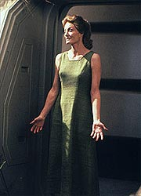
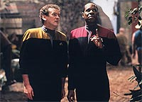
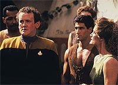
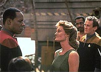
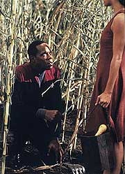

MANCHETE
DO EPISDIO
Roteiro
prope discusso indecisa sobre
o conflito "tecnologia versus natureza"
Episdio
anterior | Prximo
episdio
Sinopse:
Data Estelar: 47573.1.
Sisko e O'Brien esto em uma misso
de reconhecimento em um Explorador quando detectam sinais de vida
humana em um planeta supostamente desabitado. Os dois
transportam-se para a superfcie do planeta, onde encontram uma
colnia humana (fruto de uma nave acidentada) mantida no local
por mais de 10 anos sem benefcio algum da tecnologia.

Existe
um misterioso campo de fora no planeta que torna intil
qualquer dispositivo tecnolgico, inclusive os de Sisko e
O'Brien. Assim eles tambm ficam presos, sem chance de voltarem
nave em rbita.
Eles so encontrados por dois homens, Joseph (originalmente o
engenheiro da misso) e Vinod (filho da lder da comunidade, uma
naturalista radical, de nome Alixus).
Sisko e O'Brien chegam a um vilarejo construdo em torno do casco
da nave acidentada dos colonos. Ainda com o interesse dos colonos
pelo que aconteceu "no resto da galxia" nos ltimos
dez anos e mesmo alguns mencionando uma certa antecipao quanto
a um possvel resgate, Alixus diz que nunca ir deixar o
planeta, mesmo que a oportunidade aparea. Os dois oficiais so
convidados a ficar, desde que ajudem nas plantaes.
Uma garota de nome Meg est muito doente, beira da morte. Por
isso, Sisko e O'Brien lamentam a falta do kit mdico do
explorador e O'Brien tem uma idia de como "driblar" o
campo de interferncia. Alixus chama Sisko e diz que qualquer
conversa sobre tecnologia nociva moral da comunidade e pede
que ele mande O'Brien parar imediatamente com os seus esforos.
Kira e Dax se entregam a uma misso de procura do
"casal" desaparecido e encontram o Rio Grande, em
velocidade de dobra, sem ningum dentro, em um curso errante.
Eles rastreiam o curso do Rio Grande e rumam para o
"planeta-paraso". Sisko e O'Brien voltam do plantio e
presenciam a principal forma de punio da comunidade:
confinamento solitrio no interior de uma pequena e escura caixa
de metal (a "hot box"). Stephen (um colono) visto
saindo da caixa em estado deplorvel. Seu crime: roubou uma vela.
Naquela noite uma colona de nome Cassandra, vai ao quarto de Sisko
com a clara inteno de seduzi-lo. O comandante fica furioso.
Ele confronta Alixus com a fato de que foi ela que mandou
Cassandra e ela admite que sim. Sisko acha uma enorme
"coincidncia" o fato de uma pessoa totalmente contrria
a tecnologia vir parar em um planeta em que nenhuma tecnologia
funciona, com um bando de colonos, e se tornar a lder deles.
Alixus se irrita e manda Sisko montar guarda a noite toda.

No
dia seguinte Alixus anuncia a morte de Meg e diz ter flagrado
O'Brien tentando resolver o problema do campo de interferncia, o
que nocivo comunidade, segundo ela. Ela considera Sisko
responsvel e o manda pra dentro da caixa. Aps um longo perodo
ela o libera e diz que ele poder beber gua se comear a abraar
os valores dela. Apesar de uma sede excruciante Sisko no se
curva e volta pra dentro da caixa.
Decidido, O'Brien constri uma bssola rudimentar e encontra o
gerador do campo de interferncia enterrado na floresta. Ele o
desativa e volta para comunidade com seu feiser funcionado e
liberta Sisko. Denunciando
a surpresa de Alixus --ela confessa e diz que tudo, desde o
acidente original de dez anos atrs, foi um plano cuidadosamente
preparado, concebido por ela para chegarem na situao que a
comunidade chegou. Em sua defesa ela diz que tal experincia
conseguiu extrair o mximo potencial de cada indivduo
envolvido. Sisko lembra que muitas vidas forma perdidas, e ela
deve pagar por tais mortes.
Kira e Dax entram em rbita, Sisko oferece relocao para os
colonos, mas eles no esto preparados para deixar seu lar de
uma dcada. Apenas Alixus e seu filho deixam o "planeta-paraso"
junto com Sisko e O'Brien.
Comentrios:
Esta tentativa de Deep Space Nine de entrar no tema de
"cultos, seus seguidores e seus lderes" no foi muito
bem-sucedida. Saiba por que, nos no muito paradisacos comentrios
a respeito do episdio, a seguir.

A
aparente idia original de discutir (via uma alegoria) os
"prs e contras da tecnologia na vida moderna" acaba se
tornando, durante o curso do episdio, basicamente um estudo
sobre "cultos, em especial sobre o seus lderes". No
sei ao certo se esta mudana de foco est relacionada ao fato de
o episdio ter sofrido um nmero enorme de revises (basta
conferir os seus crditos, que, ainda assim, no incluem o fato
de que a histria original foi de Peter Allan Fields) ou da inteno
consciente de colocar Sisko em uma posio adversria frente a
uma (como caracterizada no curso do episdio) "formidvel
vil". Apesar de considerar ambos os temas relevantes
(especialmente o segundo), a falta de coeso do roteiro fere um
bocado o sentido geral do episdio.
Considerem por exemplo a cena final, em que, apesar da revelao
do plano de Alixus (e da total fraude envolvida na criao da
colnia), no existe nenhuma reao de revolta por parte da
comunidade, o que pode ser entendido como um alerta (construdo
de forma discreta, como sempre deve ser) sobre o poder que tais lderes
podem exercer sobre as pessoas em circunstncias adequadas.
A tomada final, em que as duas crianas ficam olhando a "hot
box" refora tal percepo. Porm isso, quando
contrastado com a cena da chegada de Sisko e O'Brien na
comunidade, no faz sentido algum. Ali vimos pessoas interessadas
pelo mundo exterior e Cassandra s faltando pedir para reservarem
um assento pra ela no Explorador. Este o exemplo mais claro
(mas no nico) da falta de direcionamento do episdio.
(Em um universo como o de Jornada, onde a tecnologia est
to intrinsecamente associada melhoria da qualidade de vida do
homem, temas como o deste episdio costumam ser recebidos com
indiferena. O episdio tem o mrito de ter ao menos tentado
trilhar tal caminho espinhoso.)

Abundam
problemas de trama: no apresentado um bom motivo para Sisko
(comandante da estao) sair com O'Brien em um Explorador para
uma rotineira misso de reconhecimento (a ida de Dax e Kira em
seu resgate no final tambm deixa dvidas a respeito de quem
ficou no comando da estao. Morn talvez?).
Foi uma tremenda burrice de Sisko e O'Brien se meterem na situao
em primeiro lugar --como eles vo se transportar para a superfcie
de um planeta com um "estranho campo de fora" sem
descobrir exatamente que efeito este "campo" ter no
seu transporte de retorno?
Eu fiquei impressionado com a capacidade tecnolgica e a
inventividade de Alixus, no tanto pelo gerador de campo que
poderia ter sido uma oferta como "caixa preta" de algum
cientista simpatizante, mas o fato de ela conseguir
"furar" a segurana do Explorador (uma classe de nave
que foi comissionada oito anos APS a queda do grupo de Alixus no
planeta), se transportar a bordo e programar o piloto automtico
para uma rota rumo destruio da nave --tudo foi
"meio" exagerado. (OK, ela errou a estrela, mas continuo
achando absurdo como ela conseguiu fazer tudo isso.)
As cenas iniciais entre Kira e Dax na estao funcionaram bem,
mas as cenas a bordo do Explorador foram bastante mecnicas, s
para levar uma parte da trama frente.
(Talvez tivesse sido benfico ao episdio deixar o Explorador de
Sisko e O'Brien em rbita, eliminar as cenas de Kira com Dax e
realizar alguma espcie de "fechamento" quando do
retorno de Sisko e de O'Brien estao.)
As cenas entre O'Brien e Joseph funcionaram muito bem, incluindo
especialmente a cena da fuga de O'Brien ("Eu posso fazer de
forma que no doa nem um pouco").
(A forma como Alixus vira a defesa de O'Brien por parte de Joseph
contra o prprio Joseph exemplifica claramente o que ela deve ter
feito freqentemente nestes dez ltimos anos de existncia da
colnia.)
As cenas envolvendo a "hot box" foram as melhores do
episdio. A melhor em particular foi a de Sisko retornando a
caixa logo aps ter sado dela. Tudo foi perfeito (do mais puro
e efetivo teatro), desde Sisko saindo da "cabana" at a
"hot box" se fechando com ele dentro e o ato chegando ao
seu final. Bravo!

Alixus
foi da primeira a ltima cena uma vil tradicional, com o benefcio
de acreditar plenamente em sua causa e estar disposta a fazer tudo
para defend-la (manteve a sua posio at o fim). Este tipo
de caracterizao tornou impossvel uma discusso equilibrada
sobre a dualidade "tecnologia X valor natural do homem".
(Ainda que insatisfatrio, Joseph serviu muito melhor para, ao
menos apresentar, alguns pontos da questo.)
Inmeros pontos razoavelmente conhecidos sobre lderes de cultos
foram apresentados via a personagem de Alixus. Infelizmente foram
apresentados, assim como todo o material entre ela e Sisko, de uma
forma forada (de forma a no deixar dvidas na audincia
sobre o que est acontecendo) e pouco sutil (por vezes at
grosseira).
Apesar dessas falhas na caracterizao de Alixus, ela, apesar de
acreditar plenamente no que fez, ao menos teve suficiente senso de
realidade para aceitar a sua derrota ao final e no terminar
morta, assim como o proverbial "megalomanaco da
semana".
A direo de Corey Allen teve altos e baixos, acompanhando os
altos e baixos do prprio episdio. Mas o grande problema do seu
trabalho (e o de Gail Strickland tambm) foi de no conseguir
transformar nem de longe Alixus em uma figura simptica para a
audincia.
Brooks foi excepcional (protagonizando a --de longe-- melhor cena
do episdio). Em situaes difceis e de grande presso ele
funciona perfeitamente. Meaney foi excelente como sempre e o resto
dos regulares honrou o pagamento.
Strickland decepcionou como Alixus, com uma leitura muito rgida
(dando a clara impresso de estar seguindo estritamente as linhas
de um roteiro) e pouco natural. Strickland tambm dava a impresso
de estar sempre no seu limite emocional (digamos, pronta para
desabar em lgrimas a qualquer momento), tornando difcil de
acreditar que ela de fato tenha tido carisma suficiente para ter
se tornado lder daquela comunidade. Vinovich foi o melhor ator
convidado, com uma atitude e uma leitura bem mais relaxadas e
realistas. Silver e Weis fizeram o que foi pedido deles. Nickson
se saiu muito mal MESMO.
O dilogo inicial entre Sisko e O'Brien no Explorador foi
excelente, preparando acontecimentos relacionados a Jake (de sua
ida ou no Academia da Frota Estelar) que sero tratados nos
episdios seguintes. A histria de como O'Brien fez o seu
primeiro "milagre" nos transportes e como ele ganhou o
posto de oficial ttico da Rutledge foi muito legal (ainda que a
histria passada de O'Brien seja uma das mais complicadas de se
entender dentre os personagens de Jornada -- uma LONGA histria,
para outro tipo de artigo--, eu prefiro a que consistente com
este episdio).
(Novamente Sisko fala de seu pai no passado, dando a entender que
ele ou est morto ou no mais um "chef", ambas idias
em desacordo com o que vai ser visto em "Homefront",
da quarta temporada, em que Joseph Sisko est vivo e ainda tem um
restaurante em Nova Orleans.)
A caada de Vinod a O'Brien foi muito bem realizada, incluindo o
clssico (e infame) truque do uniforme na rvore. Interessante
tambm por que descobrimos como so as roupas de baixo do
pessoal da Frota no processo.
A seqncia do "enlaamento do Explorador" deixou um
bocado a desejar e a parte em que os dois exploradores desaceleram
para impulso contm os piores efeitos visuais de toda a srie.
A cena da "tentativa de seduzir Sisko" por parte de
Cassandra foi extremamente ruim, em parte pela obviedade do
material e em grande parte pela pssima atuao de Nickson.
"Paradise" acaba ficando na categoria do
"neutro" (at abaixo disso). Embora o tema "ser
que a tecnologia de fato nos afasta de nossa natureza
fundamental?" (que acaba sendo apenas uma espcie de ponto
de partida para a discusso de lderes de cultos e similares) e
a forte presena de Sisko sejam claros pontos positivos, existem
tantas problemas de execuo e de trama no episdio, que estes
acabam por mais do que "cancelar" aqueles bons pontos.
Citaes
Joseph - "My name is
Joseph; Vinod's the one playing with the sharp object."
("Meu nome Joseph; Vinod o que est brincando com o
objeto afiado.")
Sisko - "Interesting philosophy --and while we're
discussing it, a woman is dying."
("Filosofia interessante --e enquanto a estamos discutindo,
uma mulher est morrendo.")
Alixus - "We're doing everything we can for her."
("Estamos fazendo tudo o que podemos por ela.")
Sisko - "No, we're not!"
("No, no estamos!")
Trivia:
 A dupla Hans Beimler &
Richard Manning j havia trabalhado nas trs primeiras
temporadas da Nova Gerao e depois se envolveram (entre
outras) nas sries "TekWar" (de William Shatner) e
"Beyond Reality" (onde Beimler conheceu Nicole de Boer,
que acabaria se juntando ao elenco de DS9 na stima
temporada, como Ezri Dax). Beimler, que j havia trabalhado antes
com Ira Behr na srie "Fame", se juntou em definitivo
equipe de roteiristas de DS9 a partir da quarta
temporada da srie. Manning hoje em dia trabalha na srie
"Farscape".
A dupla Hans Beimler &
Richard Manning j havia trabalhado nas trs primeiras
temporadas da Nova Gerao e depois se envolveram (entre
outras) nas sries "TekWar" (de William Shatner) e
"Beyond Reality" (onde Beimler conheceu Nicole de Boer,
que acabaria se juntando ao elenco de DS9 na stima
temporada, como Ezri Dax). Beimler, que j havia trabalhado antes
com Ira Behr na srie "Fame", se juntou em definitivo
equipe de roteiristas de DS9 a partir da quarta
temporada da srie. Manning hoje em dia trabalha na srie
"Farscape".
Presena de Julia Nickson como
Cassandra, que tambm interpretou Catherine Sakai, um interesse
amoroso do comandante Sinclair, em diversos episdios de
"Babylon 5".
O produtor-executivo Ira Steven Behr
tem o seguinte a dizer sobre o episdio: "Foi um episdio
forte para Sisko. Foi o nosso "Great Escape", com Sisko
no lugar do personagem de Steve McQueen, o firme rei, que nunca
recua um centmetro. Mas em termos da comunidade de colonos em
si, a mensagem do episdio sempre pareceu muito pouco
clara."
Ficha
tcnica:
Histria de Jim Trombetta
e James Crocker
Roteiro de Jeff King e Richard Manning & Hans
Beimler
Direo de Corey Allen
Exibido em 14/02/1994
Produo: 035
Elenco:
Avery Brooks como
Benjamin Lafayette Sisko
Ren Auberjonois como Odo
Nana Visitor como Kira Nerys
Colm Meaney como Miles Edward O'Brien
Siddig El Fadil como Julian Subatoi Bashir
Armin Shimerman como Quark
Terry Farrell como Jadzia Dax
Cirroc Lofton como Jake Sisko
Elenco convidado:
Julia Nickson como Cassandra
Steve Vinovich como Joseph
Michael Buchman Silver como Vinod
Erick Weiss como Stephan
Gail Strickland como Alixus
Majel Barrett como a voz do computador